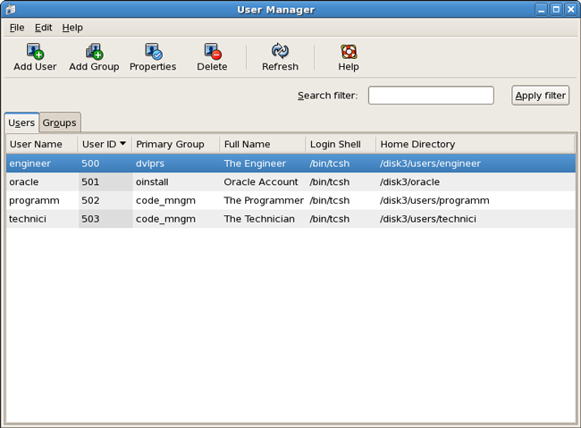
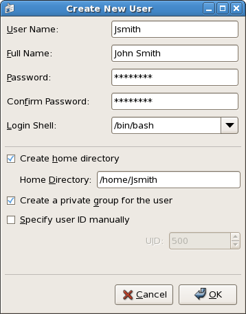
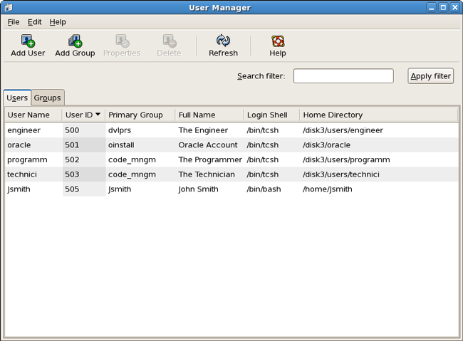
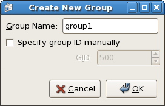
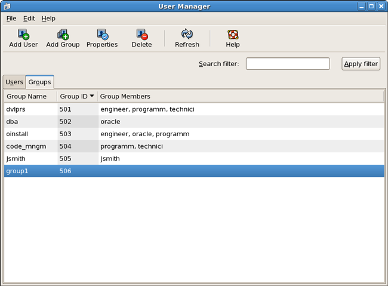
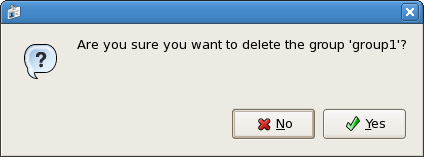
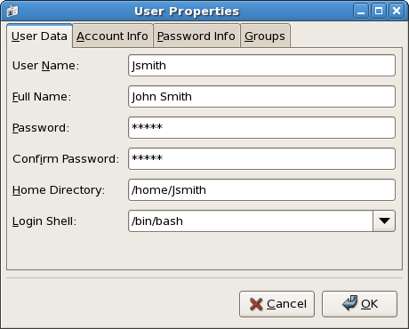

How To – Add, Remove, or Modify User Accounts
This How To provides the steps required to Add, Remove, or Modify User Accounts using the Host Computer. Before adding a new user to the system, the access level of the user must be known. Operating procedures are provided for:
- Adding a User to the Host Computer
- Adding a Group to the Host Computer
- Removing a User or a Group from the Host Computer
- Changing a Password on the Host Computer
User accounts should be removed if the users no longer need access to the system.
To add, remove, or modify user accounts, log in to the Host Computer as a superuser. For details, see How To – Log On to the Host Computer.
For detailed information on controlling user access to the Host Computer, see the Red Hat vendor documentation.
Adding a User to the Host Computer
To add a user to the Host Computer:
- From the System menu, select Administration / Users and Groups.
The User Manager is displayed.

- From the User Manager, click Add User.
The Create New User window is displayed.

- Fill in all the fields and click OK. Click Cancel to exit and return to the User Manager.
Adding a Group to the Host Computer
To add a group to the Host Computer:
- From the System menu, select Administration / Users and Groups.
The User Manager is displayed.

- From the User Manager, click Add Group.
The Create New Group window is displayed.

- Fill in the Group Name and click OK. Click Cancel to exit and return to the User Manager.
Removing a User or Group from the Host Computer
To remove a user or group from the Host Computer:
- From the System menu, select Administration / Users and Groups.
The User Manager is displayed.
- Select the Users or Groups tab to display a list of users and groups.
- Select the User or Group to be deleted.
The selected User or Group is highlighted.

- Click Delete.
The delete User or Group confirmation dialogue is displayed.

- Click Yes.
The selected user or group is removed from the list.
Changing a Password on the Host Computer
To change a password on the Host Computer:
- From the System menu, select Administration / Users and Groups.
The User Manager is displayed.
- Select the Users or Groups tab to display a list of users and groups.
- Select the User or Group to change the password.
The selected User or Group is highlighted.
- Click Properties.
The properties window is displayed.

- Enter the new password in the Password field.
- Enter the new password in the Confirm Password field.
- Click OK. Click Cancel to exit and return to the User Manager.
If a password is forgotten, the system administrator can reassign a password to the user.